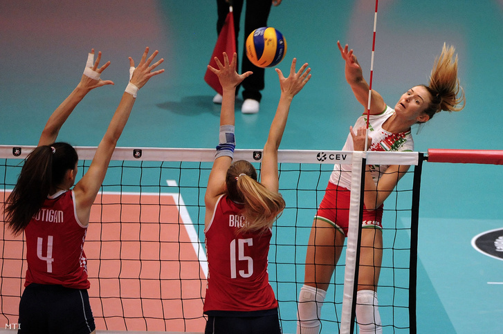
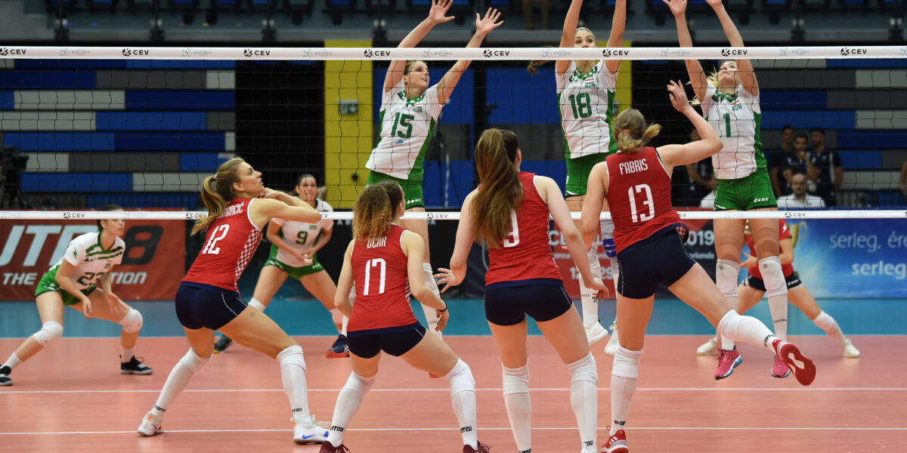

A játék célja az, hogy a játékosok a háló fölött az ellenfél játékmezejére juttassák a labdát, illetve hogy az ellenfél ugyanezen szándékát megakadályozzák. Egy csapat maximum három érintéssel kell, hogy visszajátssza a labdát. A csapat labdaérintései közé a nem szándékos labdaérintések is beleszámítanak. A sánc érintése nem számít a csapat érintései közé, tehát sáncérintés után a csapatnak még három érintésre van joga ahhoz, hogy visszajátssza a labdát. A sánc utáni első érintést bármelyik játékos végezheti, beleértve azt is, aki a sánc során érintette a labdát.
 